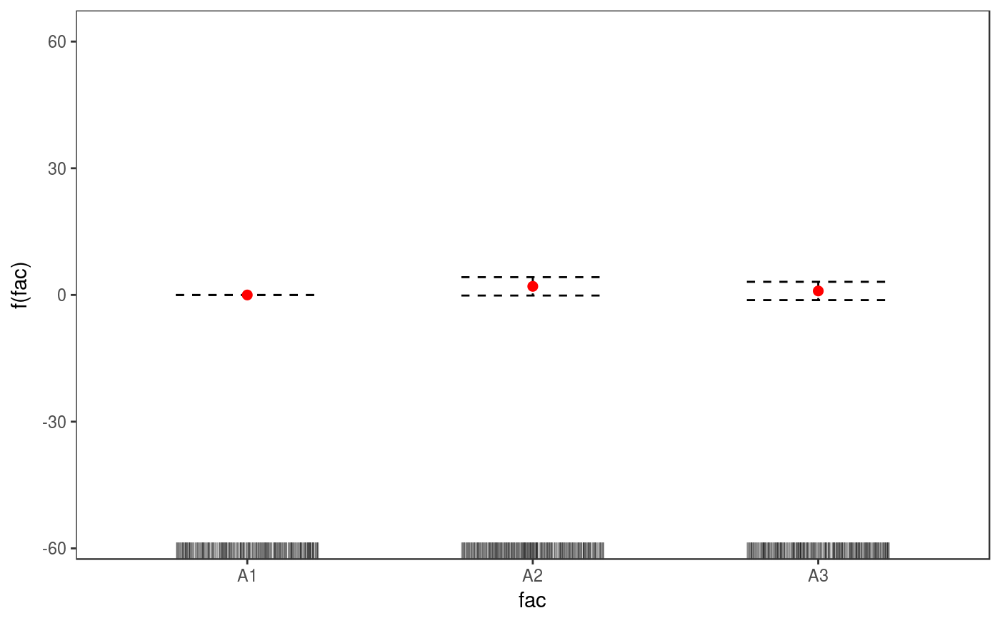
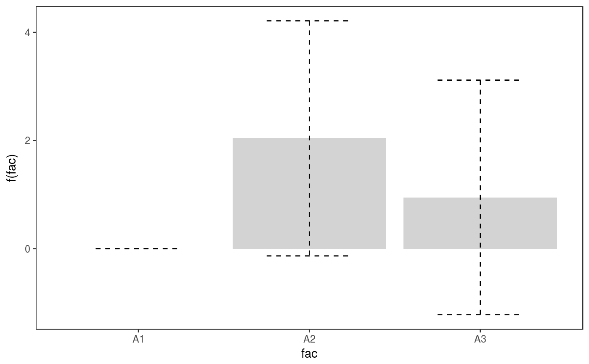
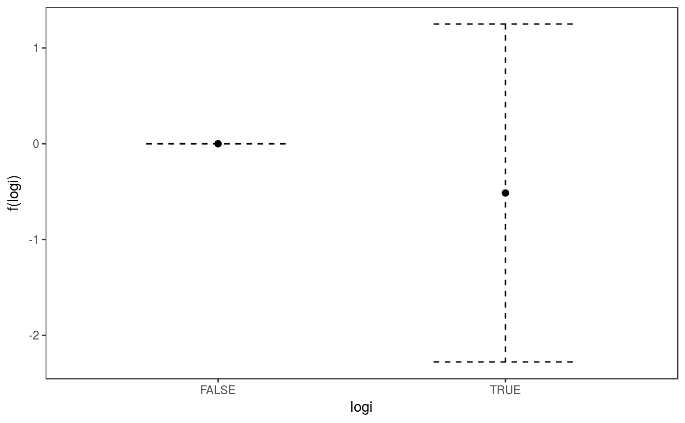

R/plot_multi_ptermFactor.R, R/plot_multi_ptermLogical.R, R/plot_ptermFactor.R, and 2 more
plot.ptermFactor.RdThese are the plotting methods for parametric factor or logical effects.
# S3 method for multi.ptermFactor plot(x, a.facet = list(), asFact = TRUE, ...) # S3 method for multi.ptermLogical plot(x, ...) # S3 method for ptermFactor plot(x, maxpo = 10000, trans = identity, ...) # S3 method for ptermLogical plot(x, maxpo = 10000, trans = identity, ...)
| x | a factor or logical parametric effect object, extracted using mgcViz::pterm. |
|---|---|
| a.facet | arguments to be passed to ggplot2::facet_wrap or ggplot2::facet_grid. The former gets
called when |
| asFact | useful when plotting multiple factor effects, one for each quantile regression model. If
|
| ... | currently unused. |
| maxpo | maximum number of residuals points that will be used by layers such as
|
| trans | monotonic function to apply to the fit, confidence intervals and residuals, before plotting. Monotonicity is not checked. |
An object of class plotSmooth.
# Simulate data and fit GAM set.seed(3) dat <- gamSim(1,n=2000,dist="normal",scale=20)#> Gu & Wahba 4 term additive modeldat$fac <- as.factor( sample(c("A1", "A2", "A3"), nrow(dat), replace = TRUE) ) dat$logi <- as.logical( sample(c(TRUE, FALSE), nrow(dat), replace = TRUE) ) bs <- "cr"; k <- 12 b <- gam(y~fac + s(x0) + s(x1) + s(x2) + s(x3) + logi, data=dat) o <- getViz(b, nsim = 0) # Extract factor terms and plot it pt <- pterm(o, 1) plot(pt) + l_ciBar() + l_fitPoints(colour = 2) + l_rug(alpha = 0.2)